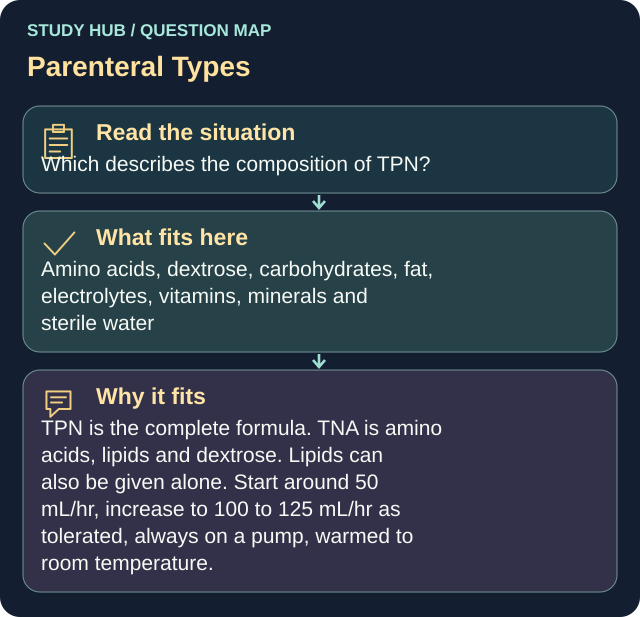

Which describes the composition of TPN?
Answer
Amino acids, dextrose, carbohydrates, fat, electrolytes, vitamins, minerals and sterile water
Reasoning
TPN is the complete formula.
Clinical detail
TNA is amino acids, lipids and dextrose. Lipids can also be given alone. Start around 50 mL/hr, increase to 100 to 125 mL/hr as tolerated, always on a pump, warmed to room temperature.
Why the other answers do not fit
- Dextrose and sterile water only
- Lipids only
TNA is amino acids, lipids and dextrose.
- Amino acids and electrolytes only
TNA is amino acids, lipids and dextrose.
Shared reasoning for choices without a separate note: TPN is the complete formula. TNA is amino acids, lipids and dextrose. Lipids can also be given alone. Start around 50 mL/hr, increase to 100 to 125 mL/hr as tolerated, always on a pump, warmed to room temperature.
